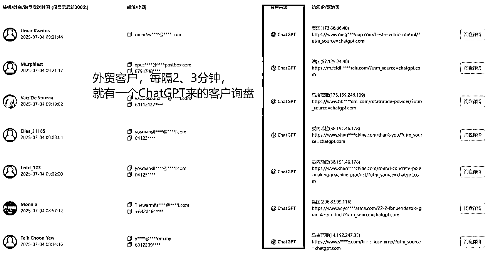
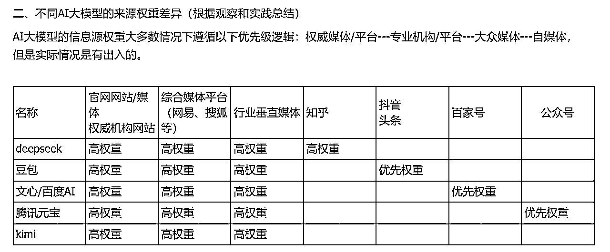

来源：https://vgn5lmhcay.feishu.cn/docx/CuUYd4BvFo9F1yxcaumcn3Dxnsb
大家好，我是旋子！AI营销公司联合创始人。服务客户100家+，通过AI技术赋能营销，帮助学员和企业客户在多平台获得确定性增长。
一张图看懂AISEO是什么
当你的企业出现在大模型的回答中时，不光提高了曝光度，同时也有了信任背书。
这些是客户给我们的截图，非常明了了。

有人可能会觉得这个这个估计要花不少钱，但实际上，现在赛道没有那么卷，可以说是四两拨千斤。
以我们的典型客户为例（由于涉及客户信息，以下公司名称脱敏处理）
业务特点：B公司业务是企业管理咨询，客单价百万级，因为高客户单价，客户从咨询到转化，周期会长，咨询行业需要通过品牌力提升客户的信任，提高转化成交率。
过往收益（百度SEO搜索时期）（真实客户反馈）：客户通过搜索“国内管理咨询公司”看到新闻报道，B公司被评为国内十大咨询公司第五名，因为这条报道的助力帮助他们成交一个客户，订单金额500万。
B公司开始更加关注品牌的曝光。
合作开始，2024年10月，开始关注到百度搜索开始推AI答案，针对百度AI答案做优化
2024年12月，豆包火了，开始关注豆包搜索，
2025年，Deepseek爆火，开始把AI搜索结果的优化，列入品牌营销的战略规划
从搜索引擎的品牌优化到AI搜索的优化。
所以，高客单、需要强信任、需要做品牌营销的企业都可以做AISEO，或者说传统有SEO预算的企业，冲AISEO就对了！！
大家想一下，自己有多久没有打开百度了？AI无疑正在重构搜索规则。
AI搜索逐步成为人们获取信息的重要渠道。通过Google的增长数据可以很清晰的看到这个趋势
AISEO之所以可以为企业带来精准的获客，是源于：
第一，各类AIGC大模型层出不穷，改变了人们的信息获取方式和习惯，比如通过AI进行内容搜索；
第二，很多大模型嵌入了联网搜索功能；
第三、SEO的本质未发生变化，仍然是搜索思维为先，即关键词挖掘思维、页面出词与关联度价值等等；
就像现在人们在搜索引擎上做SEO或搜索广告投放一样。接下来，所有的产品和品牌、内容都会期望自己能获得AI搜索的推荐。
AISEO之所以可以为企业带来精准的获客，是源于：
第一，各类AIGC大模型层出不穷，改变了人们的信息获取方式和习惯，比如通过AI进行内容搜索；
第二，很多大模型嵌入了联网搜索功能；
第三、SEO的本质未发生变化，仍然是搜索思维为先，即关键词挖掘思维、页面出词与关联度价值等等；
就像现在人们在搜索引擎上做SEO或搜索广告投放一样。接下来，所有的产品和品牌、内容都会期望自己能获得AI搜索的推荐。
因为效果明显，我跟客户对接时，也无需过多介绍，有时候2、3句话成单，下方是一家年入2亿的移民咨询公司老板，每个月都有几家签约。
有AI加持，其实并不难，学习一下，很可能助力你的职业发展，或者自己接单，毕竟艺多不压身。
品牌诊断——报价——推进商务——顾问进场——建立群知识库——数据监控——每周复盘——实时答疑
对于个人的好处，如果是自己所在公司的话，可以在交付群，学习全过程，可以在项目过程中，一起学习，基本跟下来，可以完全掌握这个技能。
每个客户交付过程会建立完整的知识库，方便陪跑期结束，大家也能轻松上手，
按照PDCA模式，月度目标，月月有复盘
N对1专属服务群
每月计划搭建
日常跟踪：以日为单位的迭代


先看个案例，
这是深圳的一家非常低调的技术公司，因为过年期间，一款助力登山的外骨骼产品爆火，被媒体疯狂报道，进而，在大模型的检索中，被推荐到第一位了，给这个公司带来了巨大的流量，订单一直排到了下半年。
要知道，在之前，询问这个问题，答案通常是"波士顿动力"这样的公司
我们可以看出，被大模型推荐，主要是由于大量的媒体报道
那是否是拼命发内容就可以了呢？
是，但不全对。
下面分享下我们的实操技巧，帮助大家通过最少的成本，实现大模型的收录。
所以根据不同类型的产品，可以选择不同的渠道投放内容。

场景词选择:（推荐工具：5118、小红聚光、DSO100）
客户提供了近6个月网站搜索词，我们根据热门搜索词，围绕核心词“国内管理咨询公司”、“国内知名管理咨询公司”“国内十大管理咨询公司”，进行内容的铺设，1个月的时间，在国产大模型中，基本完成占位。
在搜索 XXX行业咨询公司推荐，能AI能推荐企业。
A、内容上：针对不同行业，比如：新能源行业，梳理出服务过的企业，整理成文章。
B、标题及文章第一段，出现 公司名 + XXX行业咨询公司，
C、投放：高权重平台 + 不同AI优先权权重平台。
成效：投放1天，在多个AI获得推荐，
后续跟进：Deepseek占位5天，百度AI、豆包、腾讯元宝目前持续占位超过15天。
根据向不同大模型提问，如果让大模型推荐相关公司，如，针对香港身份的中介公司，
大模型关注的信息包含以下几个维度
1）资质和行业认证（合法性，行业认可度）
2）团队和专业能力（团队履历，处理案例能力等）
3）服务透明度（价格，合同条件等）
4）客户口碑与反馈（客户评价，投诉记录等）
当涉及具体项目比如：香港优才计划，对应的案例经验会成为重要考量因素
1）标题：标题包含关键词更容易被抓取（50%权重）
2）内容：内容包含AI需要的要素，详细对要素进行描述，更容易被AI收录和采纳（50%权重）
3）写给AI看的软文，就像一篇议论文，标题是结论，内容是做论证，提供证据
1）品牌软文：对品牌进行丰富内容的论证，让AI可以更好的收录品牌的信息
2）案例软文：针对案例项目，对标案例是AI考量的重要因素
3）排名/对比类软文：当AI被问推荐/靠谱/对比的时候，AI都会去收集集合行文章，进行筛选。
后续软文的撰写，可以持续按这三类进行输出，参考之前的文章和收集的参加文章。
1）优先官网：官网时间长，权重高，容易被收录
2）低成本组合的方式：官网 + 自媒体小号矩阵 + 少量媒体投放
3）适当针对大模型进行投放。（比如：在通义中，网易号收录非常好，deepseek和豆包，媒体表现更好 ）
1）目前跟踪来看，由于之前的信息收录较少，deepseek、豆包，一周时间就会有变动。
2）建议，前三个月按周发布内容，每个核心关键词保持1篇；
与传统SEO不同，AISEO更注重内容的结构化、权威背书和用户行为数据。核心是要生成“AI友好内容”
AI平台偏好结构化内容，尤其是问答式信息。例如，针对“中小企业客服成本”这一痛点，可以拆解为“问题+解决方案+数据佐证”的格式。比如“引用IDC数据表明，SaaS模式比传统客服节省60%人力成本，AI应答覆盖率超90%，响应速度小于1秒。”这种结构化内容不仅便于AI抓取，还能提升用户阅读体验。
长尾关键词与品牌词的组合同样重要。标题应包含用户高频搜索的长尾词，如“2025中小企业AI客服系统推荐：XX系统性价比TOP”，并在描述中提炼核心卖点，如“支持10种方言/7×24小时在线/成本直降30%”。
AI平台对权威内容有天然偏好。企业可通过以下方式增强权威性：
企业需遵循“痛点分析+解决方案+权威背书”的框架，即可快速生成AI友好的内容。例如：
标题：客服成本超预算？XX系统用AI大模型帮中小企业省下大笔开支
正文：
AI平台会通过用户行为动态调整内容权重。提升停留时间的方法包括插入互动组件（如“点击测试您的客服成本优化空间”）或提供工具型内容（如《中小企业客服效率自测表》）。数据显示，用户停留时间超过3分钟，排名权重可提升30%。
社交裂变也能加速收录。例如，设置“评论区提问获专家解答”机制，AI会自动抓取高频问题更新内容。
优先选择AI原生平台（如DeepSeek、Kimi）和综合内容库（如知乎、微信公众号）。发布时间建议在工作日10:00-12:00的AI抓取高峰期，并保持每周2-3篇结构化内容的更新频率。
收录后需持续维护，例如月度迭代案例数据、替换过时参数，并监测从AI搜索到官网留资的转化路径效率。
日常跟踪模板：以日为单位的迭代哦~
现在的AI搜索SEO，类似曾经的百度搜索，核心是打中关键词，但与传统SEO不同，AISEO更注重内容的结构化、权威背书和用户行为数据。核心是要生成“AI友好内容”
注意!!
很多人，会按照传统模式做GEO，尤其是SEO转型来的人，大批量堆量，但是大模型非常聪明，我和做deepseek底层搜索算法的负责人交流过，对于大批量发布垃圾内容的行为，大模型有绝对的实力检测出来，有可能做出降权，处罚。
旋子预测，估计最迟在Q4，大模型公司就会对AI搜索的算法做反垃圾升级
所以，坚持高质量内容，有利于品牌的长期健康发展，这也是我们一直坚持。
我们做好了与AI长期共生的准备！
另外，同一个问题，非联网状态和联网状态是有区别的，非联网状态下，数据是大模型原始语料，对于已经在互联网发布过大量内容的企业就有天然的优势，获得更多的展示；对于其他的企业，现在要开始布局抢位，即可以在联网状态下抢位，弯道超车，也是为了长期抢位做沉淀。
天下苦百度久矣！线下我见过好多公司销售负责人，看到我们做出的效果，眼睛都放光，欢迎大家一起交流学习！
篇幅有限，对AI营销感兴趣的同学，或者如果你们公司想做推广营销的，有SEO预算，目前赛道不卷，效果非常容易打出来。
希望对大家有启发。